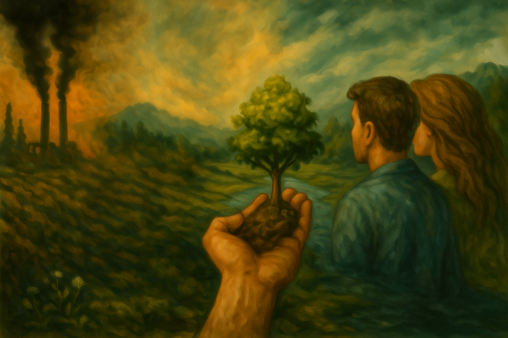

17. Mai 2025
Unsere heutige Gesellschaft ist stark vom Konsum geprägt. Produkte und Dienstleistungen sind jederzeit verfügbar, Werbung begleitet uns rund um die Uhr, und materieller Besitz wird oft mit persönlichem Erfolg gleichgesetzt. Diese Entwicklung wirft Fragen nach Nachhaltigkeit, Sinnhaftigkeit und dem Umgang mit Ressourcen auf.

Was wir kaufen, warum wir kaufen und wie oft all das ist kein Zufall. Unser Konsumverhalten wird geprägt durch Werbung, soziale Medien, kulturelle Vorbilder und ein System, das auf Wachstum um jeden Preis angewiesen ist. Dahinter steht mehr als persönliche Entscheidung: Es ist ein Netzwerk aus Psychologie, Industrie und sozialem Druck, das uns täglich beeinflusst subtil, konstant und tiefgreifend.
Was für uns bequem und selbstverständlich erscheint, basiert oft auf Unsichtbarem: auf ausgebeuteten Ressourcen, unfairen Arbeitsbedingungen und einer Wegwerfmentalität, die längst zur Norm geworden ist. Unser Überfluss ist kein Zeichen von Fortschritt er ist das Symptom eines Systems, das Mass und Verantwortung verloren hat.

Die Folgen unseres Konsums sind global spürbar: Abholzung, CO₂-Ausstoss,
Plastik in den Ozeanen und soziale Ausbeutung in Produktionsländern.
Jedes Produkt, das wir kaufen, hat einen ökologischen Fussabdruck oft grösser als uns bewusst ist.
Ein Umdenken ist dringend erforderlich.

Weniger ist mehr das gilt besonders im Konsum. Ob durch Minimalismus, Kreislaufwirtschaft,
lokale Produkte oder bewussten Verzicht: Jeder Schritt zählt. Bildung, Transparenz und politische
Rahmenbedingungen sind entscheidend, um einen nachhaltigen Wandel in Gang zu setzen.